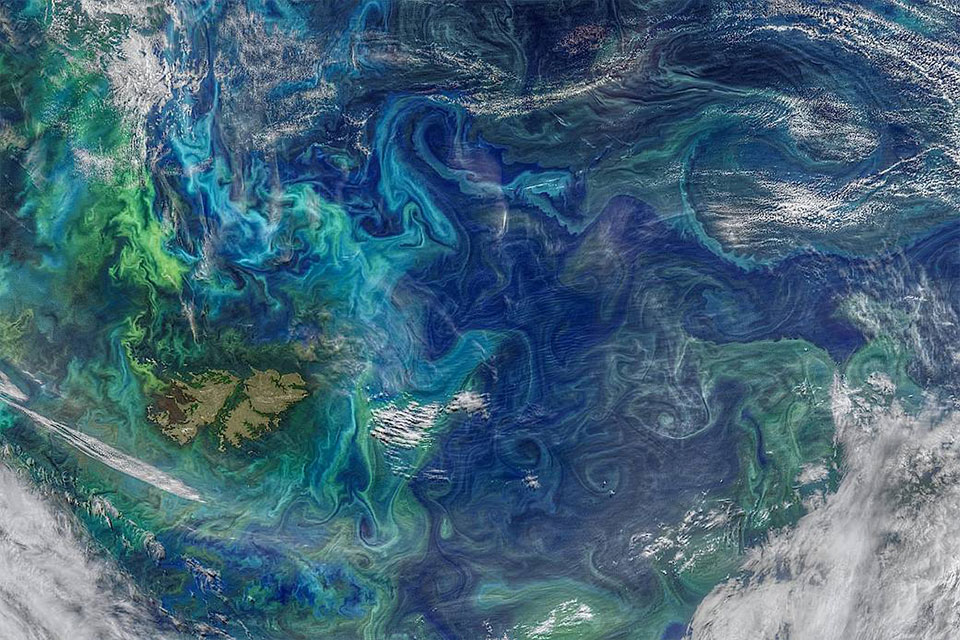

Andere vragen.
Different Questions.
"Soms is vooruitkomen niet een kwestie van betere antwoorden, maar van betere vragen."
Ik word gevraagd op plekken waar iets vastzit, zichtbaar of onderhuids. Daar luister ik, kijk mee en stel vragen die richting geven zonder deze vast te leggen.
Geen advies.
Geen oplossingen.
Wel de vragen die het denken opnieuw openen.
Wanneer iets vastloopt
Ik werk vanuit kunst en filosofie binnen organisaties, bijeenkomsten en leiderschapssituaties waar spanning voelbaar is, maar moeilijk onder woorden komt.
Ik blijf wanneer het ongemakkelijk wordt — en onderzoek wat zichtbaar wil worden.

Drie manieren waarop ik werk
Meekijken
Ik observeer wat vanzelfsprekend is geworden.
Vragen stellen
Ik open het denken waar het zich heeft gesloten.
Aanwezig blijven
Ik ga niet weg wanneer het spannend wordt.
Geen consultancy.
Geen coaching.
Geen traject.